EC2 Web Server
My first AWS project. I launched a Linux server on EC2, installed Apache, and opened it in the browser. Nothing fancy — just getting comfortable with the basics.
What I built
A simple web server running on an EC2 instance. You type the public IP in the browser and get a page back. That's it.
Browser
|
| HTTP (port 80)
v
Internet
|
v
Security Group ← controls what traffic gets in
|
v
EC2 Instance (Amazon Linux 2023)
|
v
Apache (httpd)
Services used
| Service | What I used it for |
|---|---|
| EC2 | The virtual server |
| Security Group | Firewall — opened port 22 (SSH) and 80 (HTTP) |
| Key Pair | SSH login to the instance |
Resources I created
| Resource | Value |
|---|---|
| Region | ap-south-1a |
| AMI | Amazon Linux 2023 |
| Instance type | t2.micro |
| Key pair | masterkey.pem |
| Security group | ec2-web-server-sg |
| Public IP | 3.110.120.197 |
Steps
1. Opened the EC2 Console
Went to the AWS Console, searched for EC2, and opened the dashboard. Made sure I was in the right region.
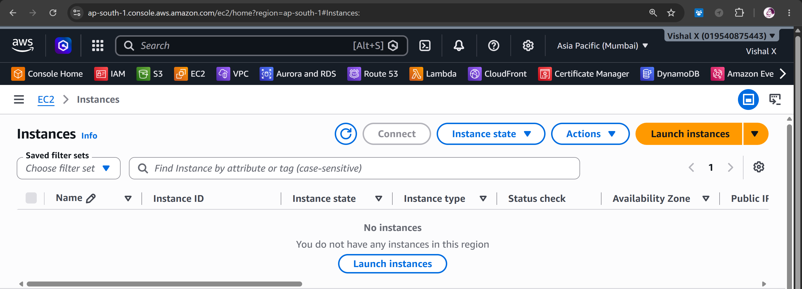
2. Picked an AMI
Clicked Launch Instance, gave it the name ec2-web-server, and chose Amazon Linux 2023. It's free tier and works well for this kind of thing.
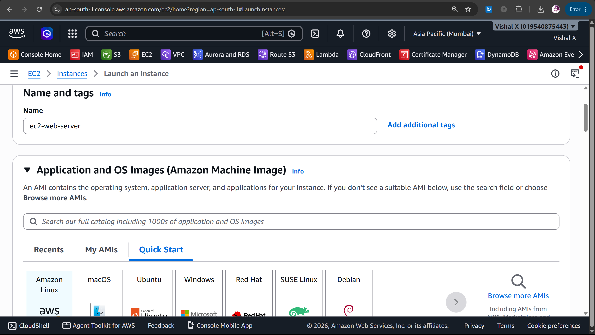
3. Chose instance type
Went with t2.micro — free tier eligible, more than enough for a basic web server.
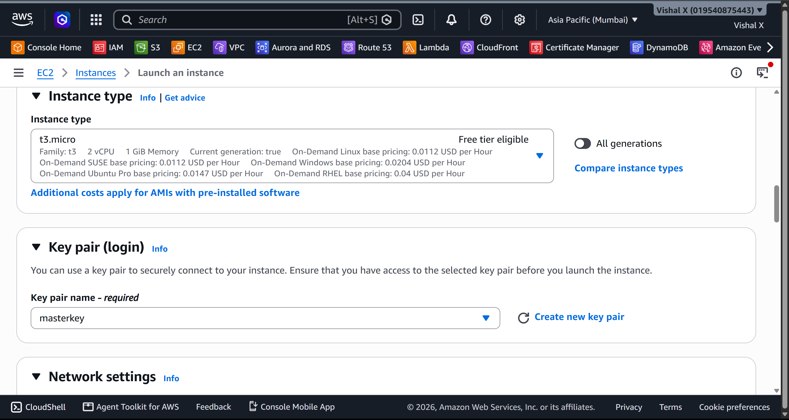
4. Created a key pair
Created a new key pair called masterkey.pem, downloaded the .pem file, and saved it somewhere safe. You only get to download it once.
The
.pemfile is in.gitignoreso it never gets committed.

5. Set up the security group
Named it ec2-web-server-sg. Added two inbound rules:
| Type | Port | Source | Why |
|---|---|---|---|
| SSH | 22 | My IP | So I can connect via SSH |
| HTTP | 80 | 0.0.0.0/0 | So anyone can view the page |
I used My IP for SSH instead of opening it to the world — better habit.
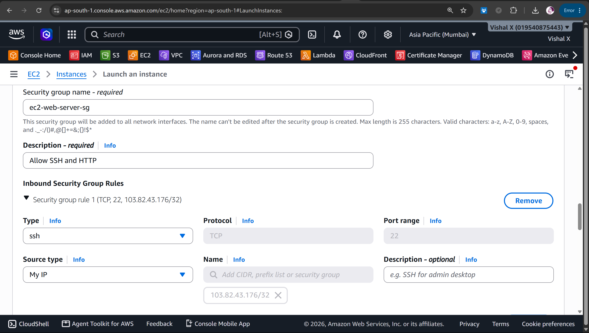
6. Launched the instance
Left storage as default (8 GiB), reviewed the summary, and hit Launch instance.
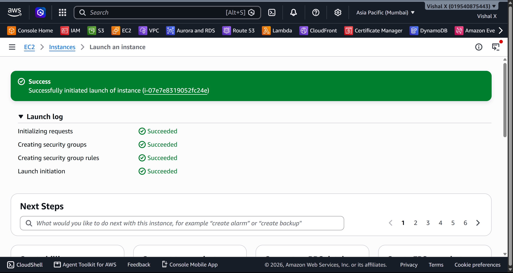
7. Waited for it to be ready
Watched the instance go from Pending to Running. Waited for 2/2 status checks to pass before doing anything else. Copied the public IP.
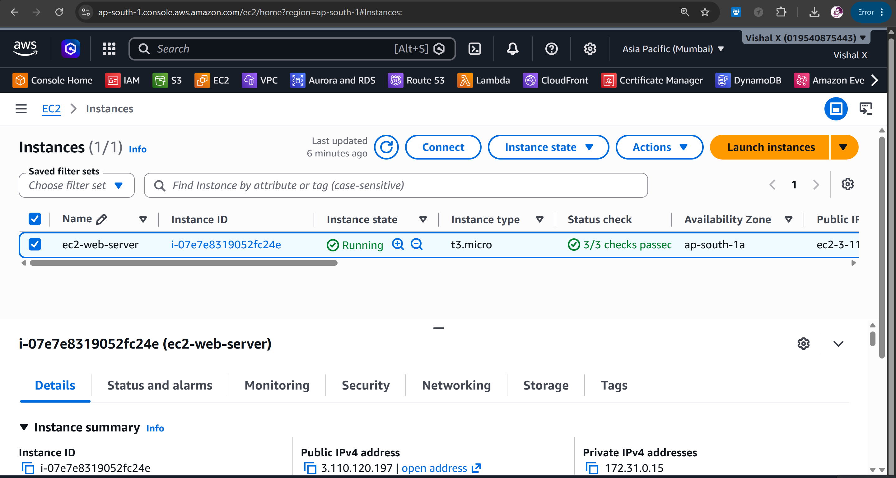
8. Connected via SSH
From Command prompt on Windows:
On Mac/Linux, you need to fix the key permissions first:
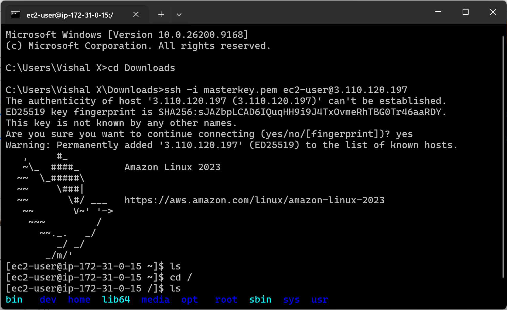
9. Installed Apache
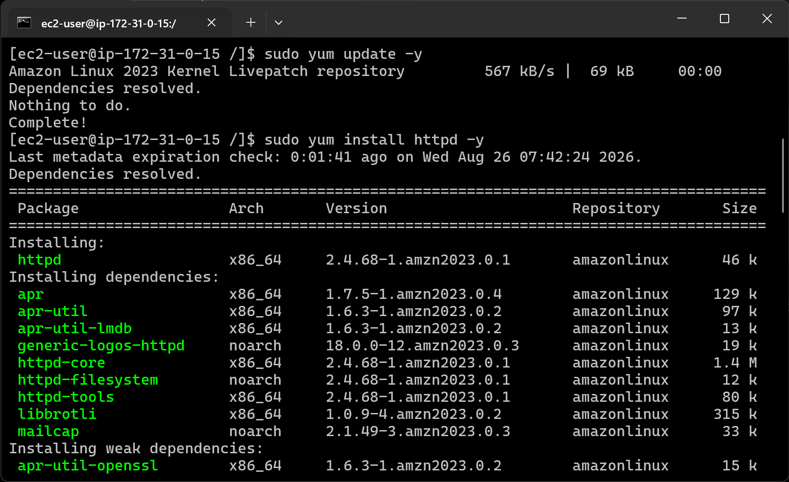
10. Started Apache
enable makes it start automatically if the instance reboots. status confirmed it was active (running).
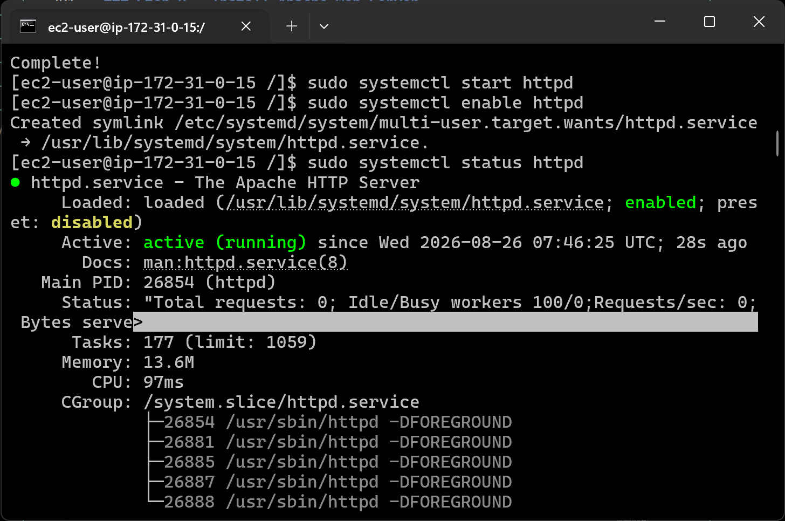
11. Created a test page
12. Tested in the browser
Opened http://3.110.120.197/ — the page loaded. Used http:// not https:// since there's no SSL set up here.
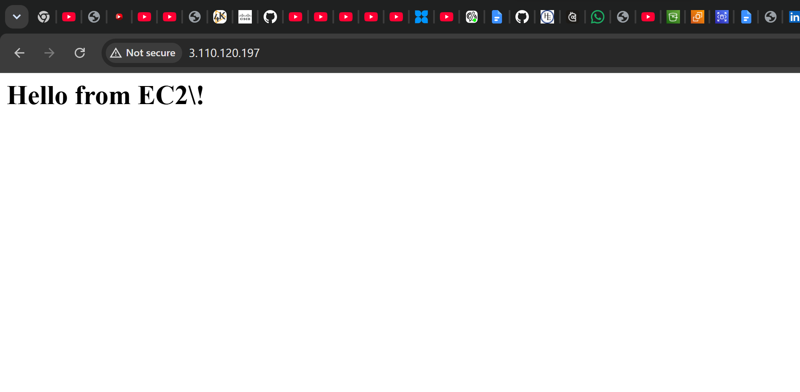
13. Cleaned up
Terminated the instance from the console: EC2 → Instances → Terminate instance. Always do this after testing to avoid charges.
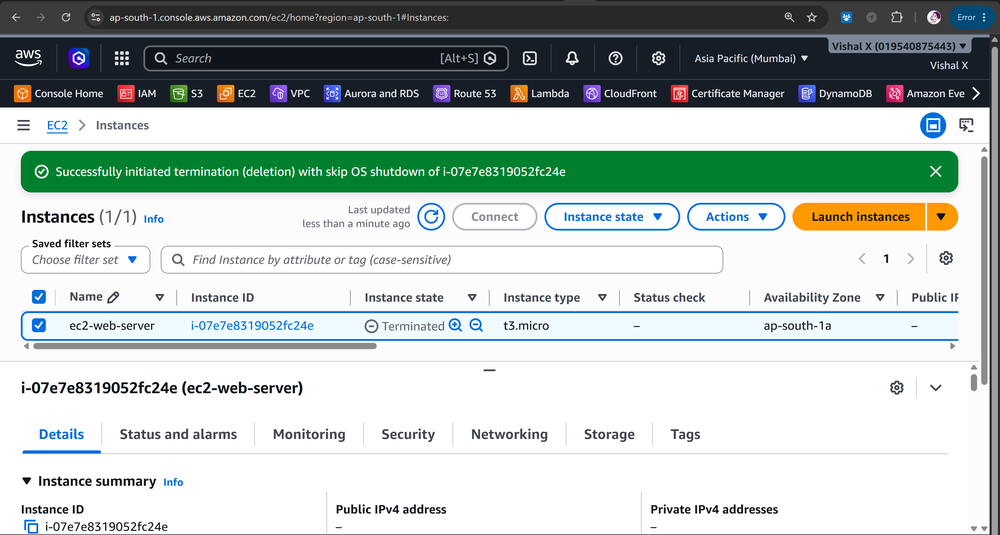
Commands
All commands are in commands/commands.md
Things that can go wrong
| Problem | What caused it | How I fixed it |
|---|---|---|
| SSH times out | Port 22 not open | Added SSH rule to security group |
| Browser won't load | Port 80 not open | Added HTTP rule to security group |
| Permission denied on SSH | Key file permissions wrong | Ran chmod 400 on the .pem file |
| Page not found | Apache not started | Ran sudo systemctl start httpd |
Security notes
- SSH is locked to my IP only, not open to everyone
- The
.pemkey is in.gitignoreand never pushed to GitHub - For a real production server I'd add HTTPS and restrict SSH further
Cost
Stayed within free tier the whole time. t2.micro gives you 750 hours/month free. Just make sure to terminate the instance when you're done.
What I learned
- How to launch an EC2 instance from scratch
- What an AMI is and why you pick Amazon Linux for simple projects
- How security groups work as a firewall
- How to SSH into a Linux server from Windows
- How to install and run Apache on Amazon Linux
- That you have to use
http://nothttps://unless you set up a certificate